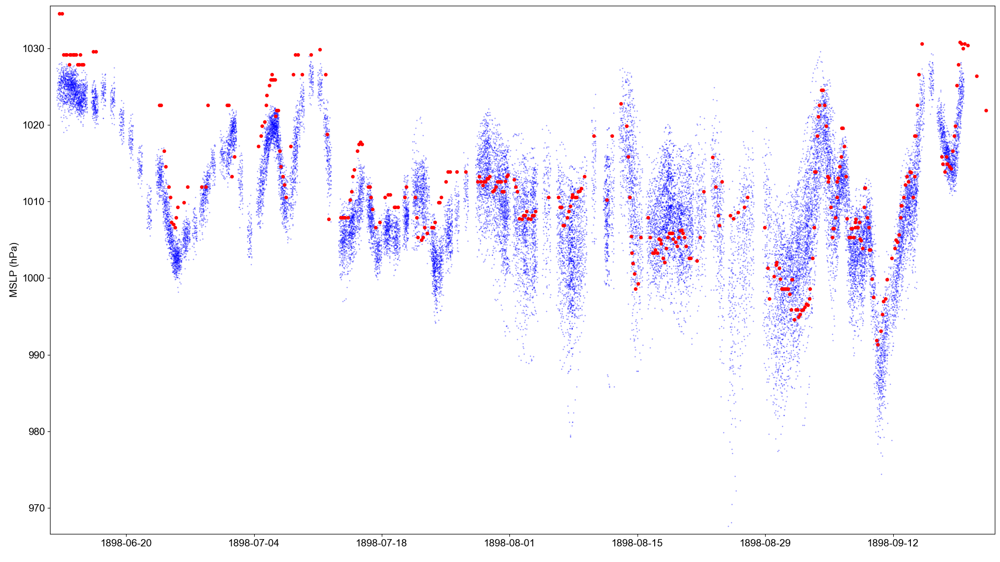

Princesse Alice II Expedition (1898): Pressure observations¶

{kind=link}
Atmospheric pressure observations made by the Princesse Alice II (red dots), compared with co-located MSLP in the 20CRv3 ensemble (blue dots).¶
Get the 20CRv3 data for comparison:
import IRData.twcr as twcr
import datetime
dtn=datetime.datetime(1898,1,1)
twcr.fetch('PRMSL',dtn,version='3')
Extract 20CRv3 MSLP at the time and place of each IMMA record. Uses this script:
./get_comparators.py --imma=../../../imma/Princess_Alice_II_1898.imma --var=PRMSL
Make the figure:
#!/usr/bin/env python
# Plot a comparison of a set of ship obs against 20CRv3
# Requires 20CR data to have already been extracted with get_comparators.py
obs_file='../../../../imma/Princesse_Alice_II_1898.imma'
pickled_20CRdata_file='20CRv3_PRMSL.pkl'
import pickle
import IMMA
import datetime
import numpy
import matplotlib
from matplotlib.backends.backend_agg import \
FigureCanvasAgg as FigureCanvas
from matplotlib.figure import Figure
# Load the data to plot
obs=IMMA.read(obs_file)
rdata=pickle.load(open(pickled_20CRdata_file,'rb'))
ob_dates=([datetime.datetime(o['YR'],o['MO'],o['DY'],int(o['HR']))
for o in obs if
(o['YR'] is not None and
o['MO'] is not None and
o['DY'] is not None and
o['HR'] is not None)])
ob_values=[o['SLP'] for o in obs if o['SLP'] is not None]
rdata_values=[value/100.0 for ensemble in rdata for value in ensemble[3]]
# Set up the plot
aspect=16.0/9.0
fig=Figure(figsize=(10.8*aspect,10.8), # Width, Height (inches)
dpi=100,
facecolor=(0.88,0.88,0.88,1),
edgecolor=None,
linewidth=0.0,
frameon=False,
subplotpars=None,
tight_layout=None)
canvas=FigureCanvas(fig)
font = {'family' : 'sans-serif',
'sans-serif' : 'Arial',
'weight' : 'normal',
'size' : 14}
matplotlib.rc('font', **font)
# Single axes - var v. time
ax=fig.add_axes([0.05,0.05,0.945,0.94])
# Axes ranges from data
ax.set_xlim((min(ob_dates)-datetime.timedelta(days=1),
max(ob_dates)+datetime.timedelta(days=1)))
ax.set_ylim((min(min(ob_values),min(rdata_values))-1,
max(max(ob_values),max(rdata_values))+1))
ax.set_ylabel('MSLP (hPa)')
# Ensemble values - one point for each member at each time-point
t_jitter=numpy.random.uniform(low=-6,high=6,size=len(rdata[0][3]))
for i in rdata:
ensemble=numpy.array([v/100.0 for v in i[3]]) # in hPa
dates=[i[0]+datetime.timedelta(hours=t) for t in t_jitter]
ax.scatter(dates,ensemble,
10,
'blue', # Color
marker='.',
edgecolors='black',
linewidths=0.0,
alpha=0.5,
zorder=50)
# Observations
ob_dates=([datetime.datetime(o['YR'],o['MO'],o['DY'],int(o['HR']))
for o in obs if
(o['SLP'] is not None and
o['YR'] is not None and
o['MO'] is not None and
o['DY'] is not None and
o['HR'] is not None)])
ob_values=([o['SLP']
for o in obs if
(o['SLP'] is not None and
o['YR'] is not None and
o['MO'] is not None and
o['DY'] is not None and
o['HR'] is not None)])
ax.scatter(ob_dates,ob_values,
100,
'red', # Color
marker='.',
edgecolors='black',
linewidths=0.0,
alpha=1.0,
zorder=100)
#ob_values_shifted=[value-12 for value in ob_values]
#ax.scatter(ob_dates,ob_values_shifted,
# 100,
# 'red', # Color
# marker='.',
# edgecolors='black',
# linewidths=0.0,
# alpha=1.0,
# zorder=100)
fig.savefig('pressure_comparison.png')